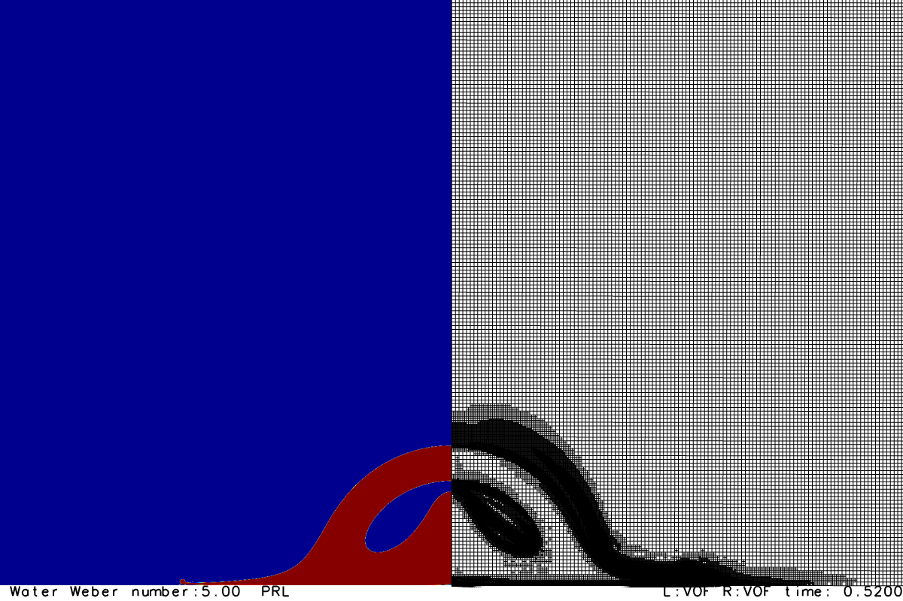
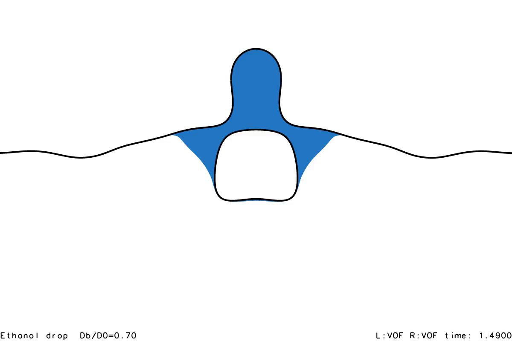
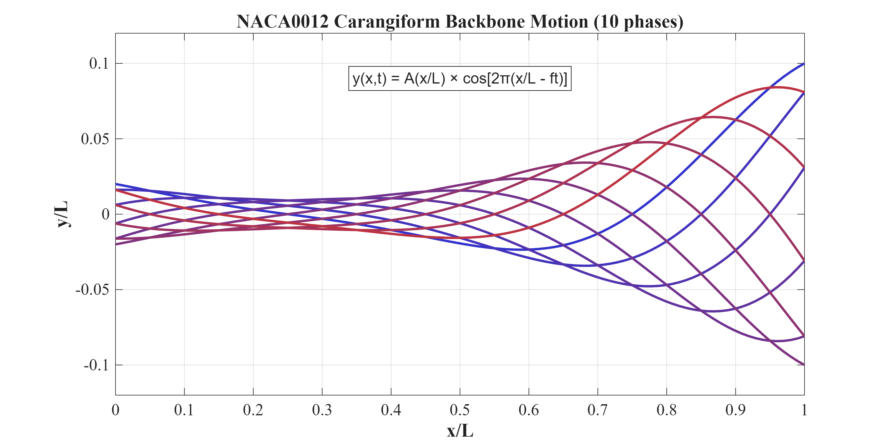

Impact force of an air-in-liquid compound drop
V. A. Thale, M. Abouelsoud, H. Chizari and M.-J. Thoraval. Physics of Fluids 36, 022110 (2024).
I’m Vinod Ashok Thale, a postdoctoral researcher at Zhejiang University. I study how drops deform on impact and how swimming fish interact with the surrounding water. Since joining Zhejiang in August 2025, I’ve used Basilisk to model spray droplets striking leaves and IBAMR to study fish hydrodynamics in aquaculture.
During my Ph.D. in Engineering Mechanics at Xi’an Jiaotong University, I combined theory with adaptive simulations to investigate how an air bubble inside a drop changes its impact force and the jets that form afterward. I studied these processes for drops striking both solid surfaces and liquid pools.
At IIT Bombay, I combined high-speed imaging with two-phase simulations to study boiling and interfacial heat transfer. After my Ph.D., I worked at IIT Hyderabad, where I used axisymmetric and three-dimensional simulations to study how aerodynamic forces break up non-spherical drops.



V. A. Thale, M. Abouelsoud, H. Chizari and M.-J. Thoraval. Physics of Fluids 36, 022110 (2024).
M. Abouelsoud, V. A. Thale, A. N. Shmroukh and B. Bai. Physics of Fluids 34, 112108 (2022).